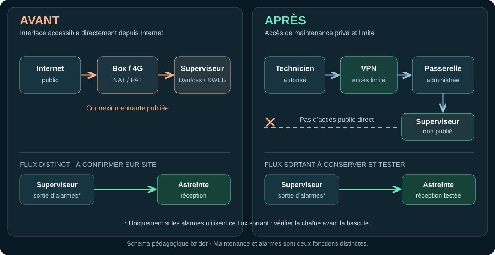
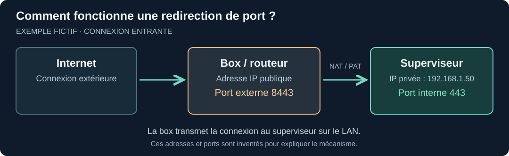
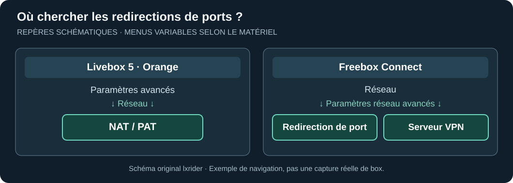
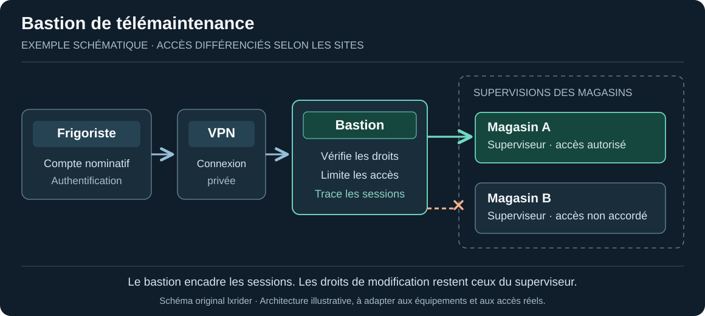

Sécuriser sa supervision frigorifique : guide pratique pas à pas
Accès distants des superviseurs Danfoss et XWEB : retrouver les chemins ouverts, passer au VPN ou au bastion, préserver la télémaintenance et les alarmes.
Sur cette page
Quand un magasin appelle pour une alarme, le frigoriste doit pouvoir ouvrir sa supervision à distance. C'est souvent ce qui permet de comprendre la situation avant de se déplacer.
La télémaintenance fait partie du quotidien des frigoristes. Les chemins d’accès méritent autant d’attention que les superviseurs eux-mêmes. Une redirection sur une box, un routeur 4G ajouté pour dépanner, un PC froid accessible à distance… Au fil des interventions, les chemins se multiplient et leur suivi devient plus difficile.
Après les incidents d'octobre 2026, le CERT-FR recommande de supprimer les accès de gestion directement exposés sur Internet. Reste la question pratique : comment fermer ces accès publics tout en conservant la télémaintenance et les alarmes de nuit ?
C'est l'objet de ce guide. Pour comprendre ce qu'un compte compromis pourrait commander ou comment reprendre le froid après un incident, deux autres articles vont plus loin. Ici, on s'occupe des accès distants aux superviseurs.
1. Accès distant et exposition Internet : deux chemins différents
L’accès distant répond au besoin du frigoriste. L’exposition Internet décrit la façon dont une interface de gestion est rendue joignable depuis l’extérieur.
- Accès direct : depuis Internet, une connexion arrive sur l'interface du superviseur, souvent grâce à une redirection de port sur la box.
- Accès protégé : le technicien entre d'abord par un VPN ou une autre solution d'accès administrée. Il accède ensuite aux seuls équipements prévus.
Une page de connexion publique reste exposée, même protégée par un mot de passe. Le VPN crée un chemin privé ; le filtrage réseau limite ensuite chaque technicien aux équipements nécessaires.

Attention au chemin des alarmes
Deux fonctionnements existent : le superviseur envoie ses alarmes vers l’extérieur, ou la plateforme de télésurveillance interroge le site. Le sens de la communication change les règles réseau à prévoir.
Avant de modifier une règle, posez la question au mainteneur et à l’astreinte : qui appelle qui ? La bascule doit préserver les communications utiles. Un essai convenu avec l’astreinte permettra ensuite de confirmer la réception des alarmes.
2. Retrouver les accès qui existent vraiment
Le schéma réseau du magasin, s'il existe, est un début. Les habitudes des intervenants en disent parfois davantage : « Je passe par la box », « on utilise une carte SIM », « je prends la main sur le PC froid ».
Il faut retrouver tous les chemins utilisés ou encore ouverts :
- redirections de ports sur la box ou le pare-feu ;
- routeur 4G/5G autonome, éventuellement ajouté par un prestataire ;
- connexion IPv6, si elle est utilisée ;
- VPN, accès cloud ou logiciel de téléassistance sur le PC froid ;
- anciens accès de maintenance, à rapprocher des contrats et intervenants actuels.
Une box principale dépourvue de redirection NAT laisse entière la question des autres accès, notamment les routeurs cellulaires et les plateformes de téléassistance.
Comprendre ce que fait la redirection
Exemple fictif : la box reçoit une connexion sur le port 8443 et la transmet au superviseur 192.168.1.50 sur le port 443. Le port externe et le port interne peuvent être différents.
Une telle règle indique un chemin possible vers le superviseur. L’accessibilité du service et l’historique des connexions restent deux vérifications distinctes.

Le responsable de la box relève la destination, les ports, le protocole et l’utilité de chaque règle. On documente d’abord ; les changements viendront lors de la bascule coordonnée.

Une vérification simple, sur votre installation
Si vous connaissez déjà l'adresse utilisée par le frigoriste et disposez de l'autorisation nécessaire :
- Sur un téléphone, coupez le Wi-Fi et tout VPN, puis essayez l'adresse habituelle de maintenance avec la connexion mobile.
- Si la page de gestion du superviseur apparaît directement, son interface Web est accessible depuis Internet.
- Si la page reste inaccessible par cette adresse, poursuivez l’inventaire des autres chemins possibles : 4G, IPv6, outil de téléassistance ou autre service.
Ce contrôle porte sur l’adresse habituelle de maintenance, dans un périmètre autorisé. Pour obtenir d’autres adresses ou vérifier d’autres équipements, passez par le responsable réseau et le mainteneur.
Qui tient les accès de télémaintenance ?
Un magasin peut appartenir à une enseigne, être équipé par un intégrateur et disposer d'un accès distant installé par son frigoriste. Le VPN peut être administré par l'informatique du groupe, tandis que le routeur 4G ou la plateforme de télémaintenance dépend d'un prestataire.
Pour chaque accès, quatre questions méritent une réponse :
- Qui décide ? Qui autorise un frigoriste ou un prestataire à intervenir sur le magasin ?
- Qui administre ? Qui crée les comptes, attribue les accès et peut les révoquer ?
- Où ? Sur la box du magasin, un routeur 4G, un bastion de l'enseigne ou une plateforme hébergée chez le prestataire ?
- Avec quelle autorité ? Quels magasins et quels équipements l'intervenant peut-il atteindre ? Qui valide une extension de ses droits ?
Un changement de mainteneur est un bon révélateur : qui sait retrouver les accès de l'ancien prestataire et qui possède les moyens de les fermer ?
3. Avant de toucher à la box, préparer le relais
On peut supprimer une redirection en quelques clics. Retrouver l'accès du frigoriste en pleine astreinte peut prendre beaucoup plus longtemps.
Avant l'intervention, mettez sur la table trois informations :
- Télémaintenance : comment le frigoriste se connecte-t-il aujourd'hui ? Depuis son PC, un VPN, un portail, une prise en main du PC froid ?
- Alarmes : qui les reçoit, par quel chemin, et comment vérifier leur réception après la modification ?
- Dépannage : quel moyen de secours est prévu en cas de panne du nouvel accès ? Qui est joignable la nuit ?
Il faut aussi connaître le modèle du superviseur et la liaison utilisée : box du magasin, routeur cellulaire ou autre. Si un contrat prévoit une télésurveillance, le prestataire concerné doit être associé à la bascule.
| Qui intervient ? | Ce qu'il doit confirmer |
|---|---|
| Exploitant du magasin | Accord pour l'intervention, créneau et solution de repli. |
| Responsable réseau / informatique | Nouveau chemin d'accès, changement des règles et fermeture de l'ancien. |
| Frigoriste | Accès distant opérationnel et fonctions utiles accessibles. |
| Astreinte / télésurveilleur | Alarmes reçues et procédure de secours connue. |
Les essais sont définis avec les intervenants : vérification des accès, réception des alarmes et préservation du fonctionnement frigorifique.
4. Quel accès mettre à la place ?
Une solution simple, maintenue et limitée aux bons équipements facilite la télémaintenance et les dépannages futurs. Chaque composant ajouté doit avoir un responsable.
VPN, passerelle, bastion : des rôles différents
Un VPN fournit un chemin privé vers le site. Une passerelle peut porter cet accès. Un bastion est utile pour organiser et tracer les interventions, surtout quand plusieurs magasins ou prestataires sont concernés.
| Situation rencontrée | Piste à examiner | Point à vérifier |
|---|---|---|
| Le magasin dispose déjà d'un VPN d'entreprise | Le réutiliser, avec un accès limité au froid | Qui se connecte et quels équipements sont joignables ? |
| La box possède un serveur VPN adapté | VPN de la box, par exemple WireGuard sur certaines Freebox | Comptes, mises à jour et filtrage des accès |
| Site à équiper d’un accès privé | Routeur VPN ou passerelle administrée | Qui assurera le suivi et le dépannage ? |
| Télémaintenance par routeur 4G/5G | Solution VPN ou distante compatible avec cette liaison | Connexion, secours et chaîne d'alarme |
| Plusieurs magasins ou plusieurs entreprises de maintenance | Accès privé complété, si nécessaire, par un bastion | Droits par magasin, sessions et accès de secours |
Le VPN fournit le chemin privé ; le bastion encadre les interventions. Selon l’outil et les protocoles utilisés, ce dernier peut imposer des comptes nominatifs, limiter les sites accessibles et conserver des traces de connexion. Les droits d’administration restent définis sur chaque superviseur.
Exemple avec deux magasins
Un même frigoriste entretient les magasins A et B. Lors d’une intervention sur A, sa session peut être limitée à ce seul magasin. Un bastion correctement configuré peut limiter sa session à A et enregistrer cette connexion.

Attention toutefois : le bastion devient un passage sensible. Il faut le maintenir à jour, protéger son administration et prévoir un secours en cas de panne. Les principes de l'ANSSI sur les accès des prestataires aux GTB/GTC éclairent ce choix. L'architecture se décide selon les contraintes de chaque magasin.
Protection provisoire avant la mise en place du VPN
Le responsable réseau peut provisoirement filtrer les connexions venant d’Internet pour autoriser exclusivement les adresses IP publiques connues du prestataire, si le matériel le permet. Le CERT-FR présente cette mesure comme temporaire : le superviseur reste joignable depuis ces adresses.
Cette protection provisoire nécessite un responsable, une échéance de passage au VPN et un essai de réception des alarmes.
Vérifier les comptes de maintenance
Un ancien prestataire utilise encore un identifiant partagé ? Un compte par défaut existe toujours ? Cela mérite une revue avec le mainteneur. Quand c'est possible, attribuez des comptes nominatifs et une authentification renforcée sur le VPN ou le bastion.
La fermeture des ports publics et la gestion des comptes sont deux protections complémentaires. Le VPN réduit également l’exposition d’un superviseur en fin de support. Pour les XWEB EVO, Copeland a annoncé l’arrêt des mises à jour logicielles le 16 mars 2026 : la protection immédiate de l’accès s’accompagne d’un projet de remplacement.
La bascule, dans le bon ordre
- Mettre en place le nouvel accès et le tester avec le frigoriste ; conserver ce qui est nécessaire au retour arrière.
- Vérifier la télémaintenance et le parcours des alarmes avec l'astreinte.
- Faire retirer l'accès public direct par la personne habilitée, avec l'accord de l'exploitant.
- Retester, vérifier les autres chemins (4G, IPv6, accès cloud) et noter le moyen de secours.
5. Après la modification, qu'est-ce qui le prouve ?
L’ancienne adresse publique doit désormais rejeter les connexions vers le superviseur. Ce premier contrôle s’accompagne de la vérification des autres chemins recensés et d’un essai complet de télémaintenance.
Contrôles à clôturer ensemble
- Les accès connus ont été recensés : box, 4G/5G, IPv6, PC froid, plateformes et prestataires.
- Le nouveau VPN ou accès privé fonctionne pour le frigoriste autorisé ; les tentatives depuis un compte hors périmètre sont bloquées.
- Le technicien accède uniquement aux équipements prévus pour son intervention.
- Si un bastion est présent, les droits par magasin, les journaux et le secours ont été testés.
- Les accès directs identifiés ont été fermés ; le réseau a vérifié les autres chemins possibles.
- Une alarme de test autorisée a été reçue et confirmée par l'astreinte.
- Le frigoriste confirme que la supervision et les fonctions de télémaintenance nécessaires restent accessibles.
- Pour chaque accès, celui qui autorise, administre et retire les droits est identifié, y compris chez les prestataires.
- On sait qui maintient la solution, qui dépanne et qui appeler en dehors des heures ouvrées.
Ce guide concerne la sécurisation préventive des accès. Si une compromission est suspectée, il faut préserver les constats et coordonner la réponse avec les personnes compétentes ; la reprise après incident est un autre sujet.
Le résultat se vérifie sur le terrain : le frigoriste intervient à distance par un accès maîtrisé, l’astreinte reçoit les alarmes et les interfaces de gestion restent derrière les protections prévues.
Sources et documentation
- CERT-FR — CERTFR-2026-ALE-012 : incident ciblant les contrôleurs à distance des installations de réfrigération (version du 16 octobre 2026).
- Copeland / Dixell France — Recommandations pour une utilisation sécurisée des superviseurs XWEB (14 octobre 2026).
- Danfoss — AK-SM 800A User Guide (juin 2026, notamment p. 30 et 35 ; 800A uniquement).
- Copeland / Dixell — Manuels XWEB EVO 5.6.0 et XWEB PRO 1.2 : versions distinctes.
- ANSSI — Recommandations de sécurité relatives à la GTB/GTC (2026) et Administration sécurisée des systèmes d'information, section 13.1 « Utilisation d'un bastion ».
- Orange — Livebox 5, NAT/PAT ; Free — paramètres réseau avancés.
Portée : guide pratique destiné aux intervenants autorisés sur les supervisions frigorifiques. Les exemples d'accès et les schémas sont conceptuels ; ils doivent être confrontés aux équipements, connexions et contrats du site.
Version 1.3.2 — révision éditoriale publiée, 24 octobre 2026. © 2026 lxrider — Tous droits réservés.